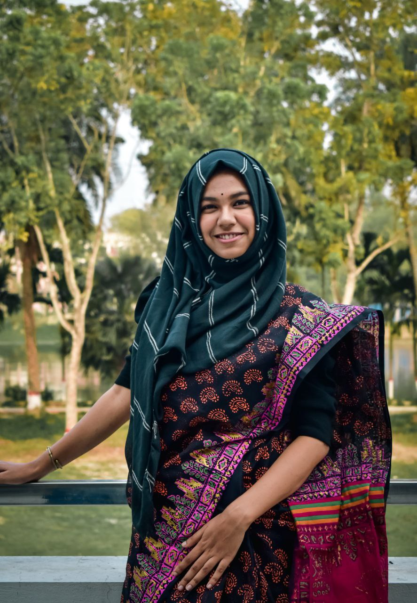

ECE Graduate | Prospective Graduate Student

I am an ECE graduate from the Khulna University of Engineering & Technology (KUET), Bangladesh. My research interests include deep learning, machine learning, and image processing. I am passionate about developing new algorithms and models to solve real-world problems, as well as designing academic websites and contributing to open-source projects.
Education
Skills
Experiences
ECE Graduate | Prospective Graduate Student
I am an ECE graduate from the Khulna University of Engineering & Technology (KUET), Bangladesh. My research interests include deep learning, machine learning, and image processing. I am passionate about developing new algorithms and models to solve real-world problems, as well as designing academic websites and contributing to open-source projects.
Education
Skills
Experiences
Designing responsive and academic portfolio websites using HTML, CSS, and JavaScript.
Read MoreDeveloping and training ML models for prediction, classification, and image processing tasks.
Read MorePerforming exploratory data analysis and feature engineering using Python and Pandas.
Read More